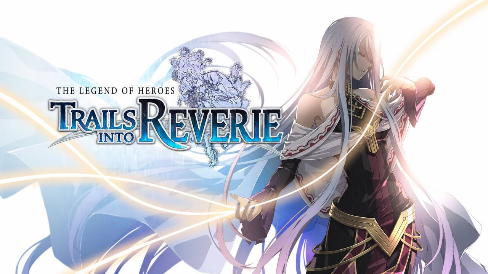
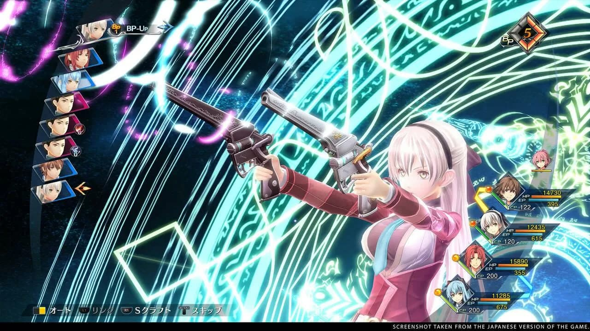

The Legend of Heroes: Trails into Reverie confirma su fecha de estreno
La veterana saga de rol japonés se prepara para desembarcar en occidente.
Nos llegan excelentes noticias para todos los fans de The Legend of Heroes, ya que se acaba de confirmar que The Legend of Heroes: Trails into Reverie se lanzará en julio del próximo año en nuestro territorio para consolas PlayStation, Nintendo Switch y PC.
Como seguramente recordarás, fue hace un par de meses cuando se confirmó la fecha de lanzamiento de The Legend of Heroes: Trails to Azure. Ahora, es momento de que apuntes el estreno de un juego más de la saga en tu calendario.
Es debido a esto que los responsables de la franquicia confirmaron que será el próximo 7 de julio de 2023 el momento en el que los seguidores podrán disfrutar The Legend of Heroes: Trails into Reverie, anuncio que acompañaron con un trailer de su historia.
Una nueva aventura por Zemuria
Lloyd Bannings, líder de la Sección de Apoyo Especial del Departamento de Policía de Crossbell, se encuentra luchando por la libertad de su ciudad una vez más después de que las celebraciones por la independencia de Crossbell sean interrumpidas de repente por la reaparición repentina de una vieja amenaza.
Siguiendo a los eventos del Gran Crepúsculo, el héroe Ereboniano Rean Schwarzer y sus estudiantes regresan a la vida en el campus. Sin embargo, esta paz es interrumpida por la aparición de una nueva amenaza. -Cuando el anterior gobernador general de Crossbell regresa de repente y reclama la ciudad-estado, cuatro individuos llevan a cabo una misión secreta para investigar sus acciones.
Su líder es C, un individuo enmascarado que parece estar usando el mismo nombre en clave que el líder del Frente de Liberación Imperial. ¿Pero para qué fin? Muy pronto lo descubriremos
Cabe mencionar que la entrega te permitirá utilizar el sistema Crossroads para cambiar entre los protagonistas para determinar el destino de cada uno de ellos y las zonas dentro de la región. The Legend of Heroes: Trails into Reverie se lanzará para PlayStation 5, PlayStation 4, Nintendo Switch y PC, a través de Steam, Epic Games Store y GOG, el 7 de julio de 2023.